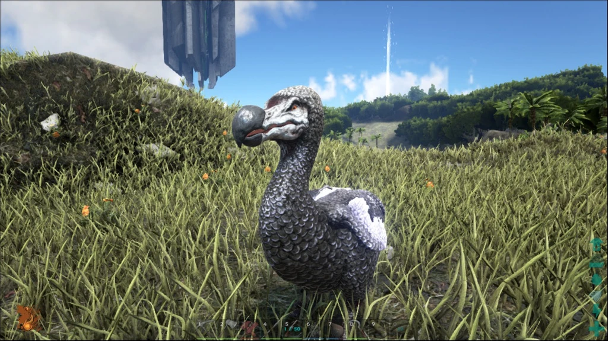
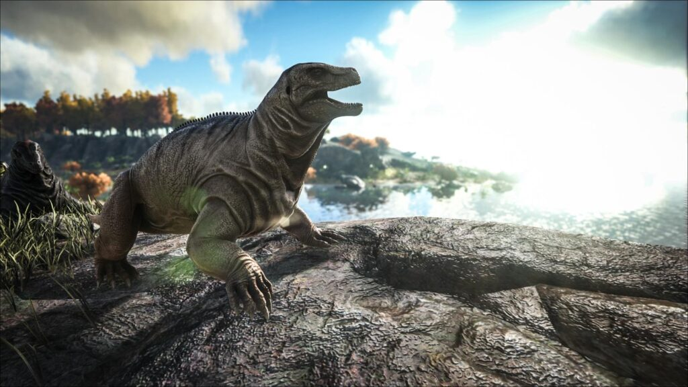
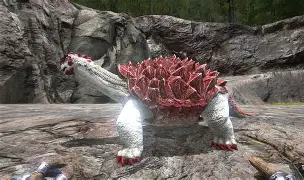
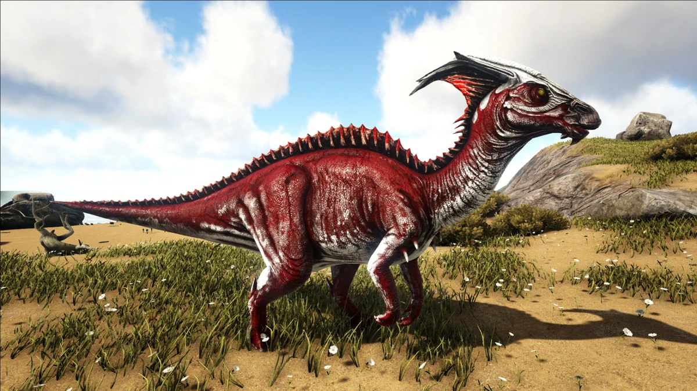
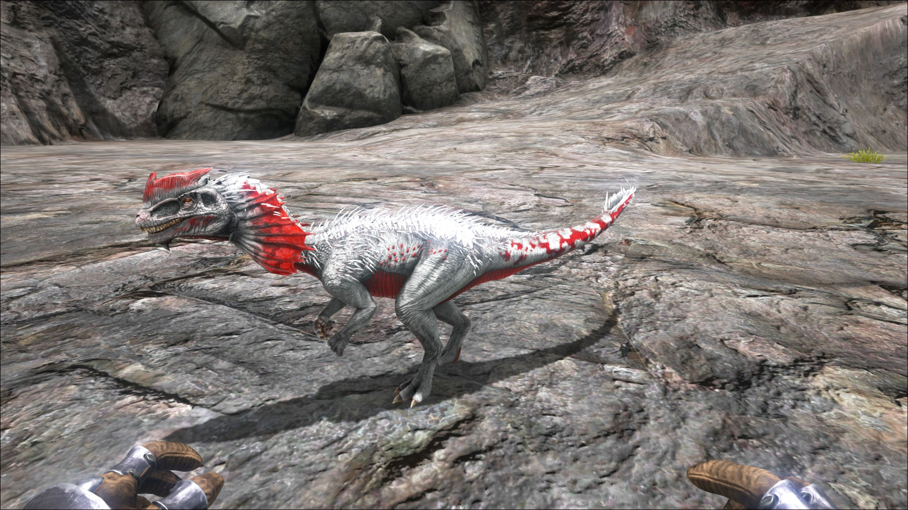
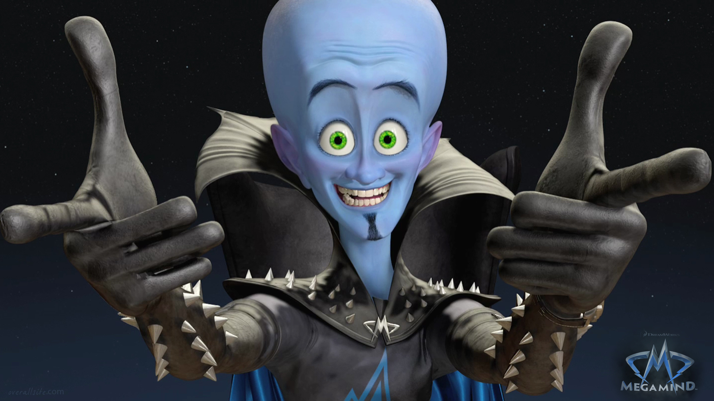

o dodô é a criatura mais frágil do jogo, usada para coletar ovos e fazer comida para domar outros bichos.

o moschops é um herbívoro dócil que pode ser montado sem sela, ótimo para coletar fibras e frutas no início do jogo.

o Carbonemys é uma tartaruga pré-histórica lenta e resistente, ótima para carregar peso e servir como escudo vivo no início do jogo.

o Parasaur é um herbívoro inicial que não serve para combate, mas é excelente como sentinela, alertando sobre predadores próximos com seu grito de alarme.

é um dinossauro pequeno e agressivo que cospe veneno, causando confusão. Fácil de domar, serve como aliado inicial para caça e defesa.

Criatura suprema, não descoberta ainda, dá cabeçada nas Criaturas, otímo para o inicio do jogo e também um otímo vilão.